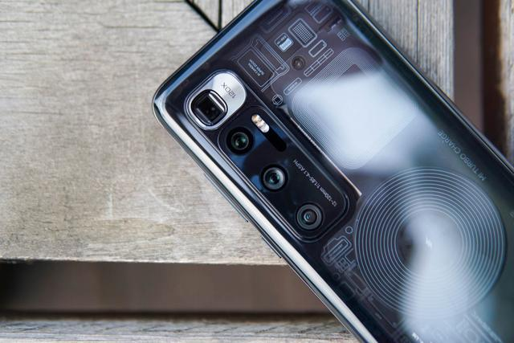

Mi 10 Ultra
Xiaomi Mi 10 Ultra is officially announced in August. The display screen has an OLED capacitive touchscreen with 6.67 inches that have an 89.5% screen to body ratio that provides a resolution of 1080×2340 pixels. Xiaomi Mi 10 Ultra is powered by Qualcomm SM8250 Snapdragon 865. It comes with the quad-camera that has 48 MP (wide) + 48 MP (periscope telephoto) 5x optical zoom with 120x hybrid zoom + 12 MP (telephoto) 2x optical zoom + 20 MP (ultrawide) on the rear side. On the front, there is a single 20 MP (wide) camera. It supports Dual SIM (Nano-SIM, dual stand-by) and runs on an Android 10 + MIUI 12 operating system. The phone has color options such as Obsidian Black, Mercury Silver, and Transparent Edition. There are several sensors integrated into the smartphone such as Fingerprint (under display, optical), accelerometer, gyro, proximity, compass, and barometer. The device is fueled with Non-removable graphene-enhanced Li-Ion 4500 mAh battery + Charging Fast charging 120W, 41% in 5 min, 100% in 23 min (advertised) + Fast wireless charging 50W, 100% in 40 mins (advertised) + Reverse wireless charging 10W + Quick Charge 5, Quick Charge 4+, and Power Delivery 3.0.
Xiaomi Mi 10 Ultra Specs Body: Glass front (Gorilla Glass 5), glass back (Gorilla Glass 6), aluminum frame Screen: 6.67 inches, 109.2 cm2 (~89.5% screen-to-body ratio) Rear camera: 48 MP, f/1.9, 25mm (wide), 1/1.32”, 1.2µm, PDAF, Laser AF, OIS 48 MP, f/4.1, 120mm (periscope telephoto), ½.0”, 0.8µm, PDAF, OIS, 5x optical zoom, 120x hybrid zoom 12 MP, f/2.0, 50mm (telephoto), ½.55”, 1.4µm, Dual Pixel PDAF, 2x optical zoom 20 MP, f/2.2, 128˚, 12mm (ultrawide), ½.8”, 1.0µm, PDAF Video recording: 8K@24fps, 4K@30/60fps, 1080p@30/60/120/240/960fps, gyro-EIS, HDR10 rec. Front Camera: 20 MP, f/2.3, (wide), 1/3.4”, 0.8µm, HDR, 1080p@30fps, 720p@120fps, gyro-EIS Chipset: Qualcomm SM8250 Snapdragon 865 (7 nm+), Octa-core (1×2.84 GHz Kryo 585 & 3×2.42 GHz Kryo 585 & 4×1.80 GHz Kryo 585), Adreno 650 Memory: 128GB 8GB RAM, 256GB 8GB RAM, 256GB 12GB RAM, 512GB 16GB RAM, UFS 3.1 OS: Android 10, MIUI 12 Battery: Li-Ion 4500 mAh, non-removable, graphene-enhanced, Fast charging 120W, 41% in 5 min, 100% in 23 min (advertised), Fast wireless charging 50W, 100% in 40 mins (advertised), Reverse wireless charging 10W, Quick Charge 5, Quick Charge 4+ Power Delivery 3.0 Connectivity: Wi-Fi 802.11 a/b/g/n/ac/6, dual-band, Wi-Fi Direct, DLNA, hotspot, 5.1, A2DP, LE, aptX HD, with dual-band A-GPS, GLONASS, BDS, GALILEO, QZSS, USB Type-C 2.0, USB On-The-Go Audio: Stereo loudspeaker Misc: Fingerprint (under display, optical), accelerometer, gyro, proximity, compass, barometer